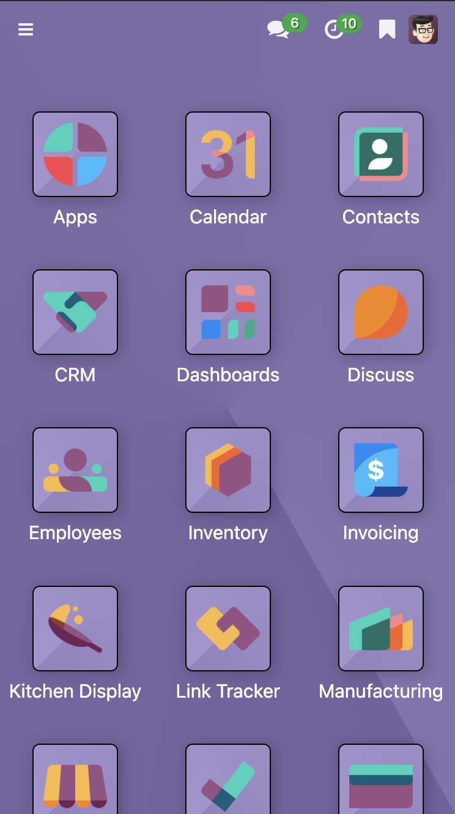
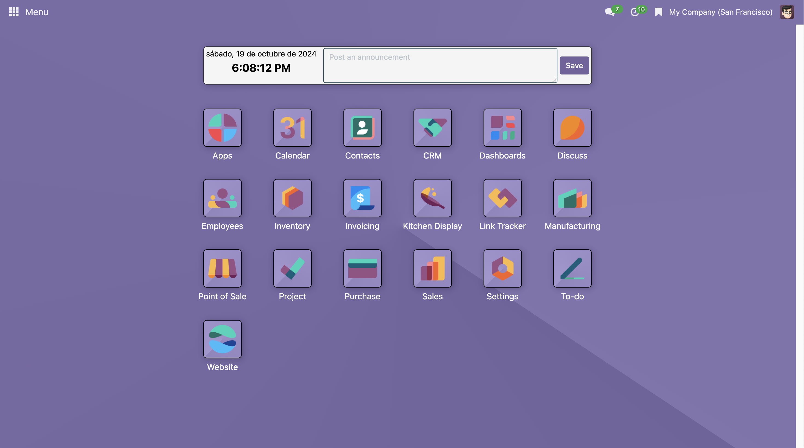
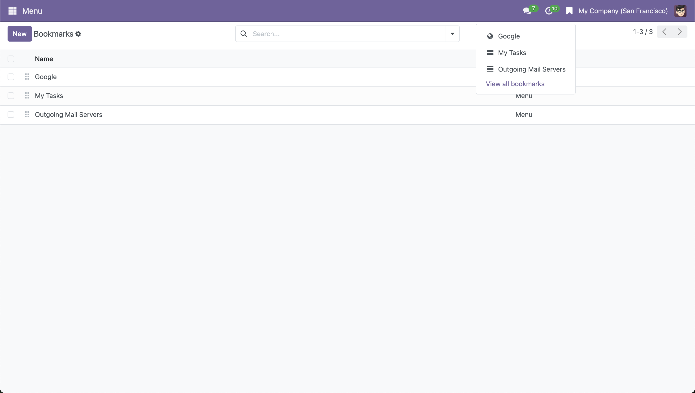

Main Menu
Version 1.1.0
This module is designed for Odoo Community Edition, providing an enhanced way to navigate between modules more efficiently.
Features:
- Centralized main menu to quickly access the core modules installed in Odoo. 
- Enables widget functionality to display the current date and publish announcements for all users. Only administrators can modify announcements. 
- Allows the creation of bookmarks for quick access to important menus within Odoo or external links. 
-
Easily create new menu bookmarks using the "Add Bookmark" button.